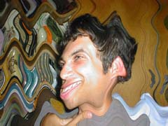
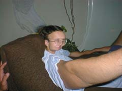
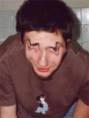
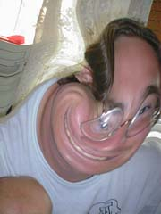

 |
Andrej
az UFO és nagy dumazsák, mindenkit lehengerel abszolút értelemben véve.
Legszebb nyarait Amerikában tölti pénzkeresés végett (ami tegyük hozzá nagyon
jóravaló és nagyon ökör dolog), és fogjuk rá hogy bejön neki. Amerikában
a hotdog komoly biznisz. ÷) (A fiatalember ma már meggyõzõ magabiztossággal mondja angolul a "mustárral vagy kecsappal?" ill. "nem tudok visszaadni" szakkifejezéseket.) |
||||
 |
Szerdus
a Don (Szerdon) folyosólakó szobaspan, bejár órákra és basszergép. Egyszer
majd doktorandusz lesz ha megéri, addig is szorgalmasan jár-kel fel s
alá kezében a jegyzeteivel, mer nem tud tanulás közben seggen maradni.
÷) |
||||
 |
Vaki a pólóján látható állatról kapta a becenevét. Hihetetlenül kreatív hülye, ötletszerû ad-hoc felkiáltásai a teljesség igénye nélkül: "Tortatataaa!!"
(Szülinapi tortahancúr lett...) |
||||
 |
Dani
hemüveges, ha iszik hiperaktív, és szintén basszergép. A hiperaktívat
komolyan értem, józanon olyan szelíd mint a gesztenye, ha berúg akkor
meg kukákat burogat ki (más szobájában persze ÷), utcákat sötétít be villanyoszlopon
elhelyezett trafódobozra mért lábrúgás által, valamint a betonon hanyattfekve
agonizál a neki tetszõ zenékre. Tanulmány, komolyan mondom... ÷) hey, cucc, man, chick, fixchick, ésatöbbi... |
||||